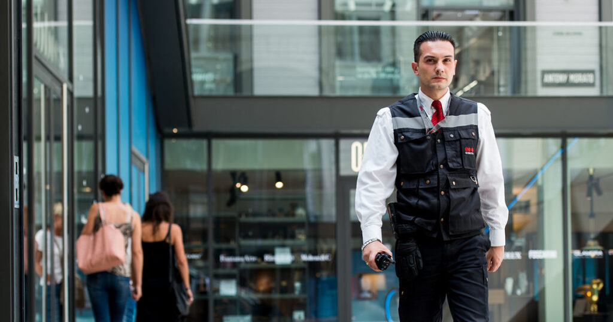

01 55 99 13 86
01 55 99 13 86  contact@forfsis.fr
contact@forfsis.frFormation CQP - APS

La formation CQP - APS (Certificat de Qualification Professionnelle - Agent de Prévention et de Sécurité) vous permet de devenir un agent de sécurité qualifié, capable de gérer des situations de prévention et de sécurité dans divers environnements.
Objectifs de la Formation
- Acquérir les compétences nécessaires pour devenir agent de prévention et de sécurité
- Gérer des situations de sécurité et de prévention
- Assurer la sécurité des biens et des personnes
- Développer des compétences en surveillance et intervention
Programme de la Formation
- Théorie : 120 heures
- Pratique : 35 heures
- Examen : 5 heures
Contenu de la formation :
- Cadre légal et déontologique
- Techniques de prévention et de sécurité
- Surveillance et intervention
- Communication et gestion des conflits
Prérequis
- Être âgé de 18 ans minimum
- Fournir un certificat médical datant de moins de trois mois
- Comprendre et parler le français
Conditions d'admission
Titulaires de la nationalité française
- Certificat médical de moins de trois mois
- Maîtrise de la langue française à l’écrit et à l’oral
- Casier judiciaire vierge
Non-titulaires de la nationalité française
- Maîtrise de la langue française à l’écrit et à l’oral
- Casier judiciaire vierge dans le pays d'origine et en France
- Autorisation de travail en France
Détails Pratiques
Durée de la formation : 175 heures
Lieu : 11 Rue Marcel Sembat, 93430 Villetaneuse
Prix
Paiement personnel : 900€
Paiement par compte CPF/Pôle Emploi : 1490€
Inscriptions
Pour vous inscrire à la formation CQP - APS, veuillez nous contacter au 01 55 99 13 86 ou au 06 82 98 73 82 ou par email à contact@forfsis.fr.